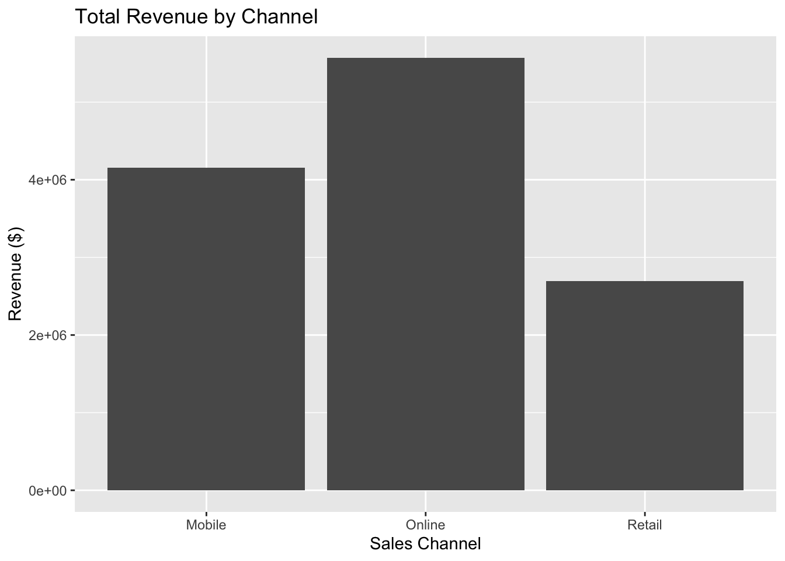
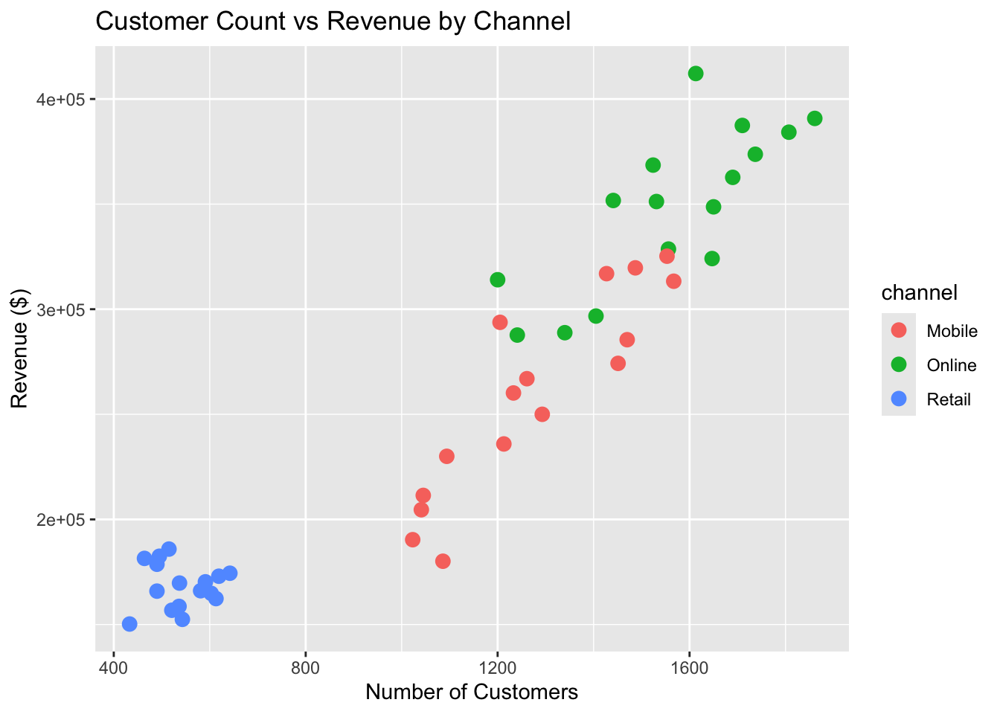

# Then load the library once (and only once) in your RMD file
library(ggplot2)
##Data Preparation and Initial Analysis# Load ggplot2
library(ggplot2)
# Load the business dataset
business_data <- read.csv("data/business_performance.csv")# Check the structure of the data
str(business_data)## 'data.frame': 48 obs. of 7 variables:
## $ quarter : chr "Q1" "Q2" "Q3" "Q4" ...
## $ channel : chr "Online" "Online" "Online" "Online" ...
## $ year : int 2023 2023 2023 2023 2023 2023 2023 2023 2023 2023 ...
## $ revenue : int 314019 288825 296739 287699 351721 324090 348699 328609 368558 362724 ...
## $ customers : int 1200 1340 1405 1241 1441 1647 1650 1556 1524 1690 ...
## $ conversion_rate: num 3.9 3.4 2.9 3.6 NA 3.8 3.4 3.7 4.3 3.6 ...
## $ region : chr "North" "South" "East" "West" ...# Get a summary of the data
summary(business_data)## quarter channel year revenue
## Length:48 Length:48 Min. :2023 Min. :150231
## Class :character Class :character 1st Qu.:2023 1st Qu.:177597
## Mode :character Mode :character Median :2024 Median :263544
## Mean :2024 Mean :258796
## 3rd Qu.:2024 3rd Qu.:324372
## Max. :2024 Max. :412125
##
## customers conversion_rate region
## Min. : 433 Min. :2.300 Length:48
## 1st Qu.: 600 1st Qu.:3.100 Class :character
## Median :1223 Median :3.700 Mode :character
## Mean :1127 Mean :3.849
## 3rd Qu.:1526 3rd Qu.:4.400
## Max. :1861 Max. :6.400
## NA's :3Quarter: character (categorical data)
Channel: character (categorical data)
Range of revenue values: 150,231 to 412,125
# Calculate total revenue by channel
total_revenue_by_channel <- aggregate(revenue ~ channel, data = business_data, FUN = sum)
# View the results
total_revenue_by_channel## channel revenue
## 1 Mobile 4158056
## 2 Online 5571130
## 3 Retail 2693023# Find the channel with the highest total revenue
total_revenue_by_channel[which.max(total_revenue_by_channel$revenue), ]## channel revenue
## 2 Online 5571130# Calculate average customers by quarter
avg_customers_by_quarter <- aggregate(customers ~ quarter, data = business_data, FUN = mean)
# View the results
avg_customers_by_quarter## quarter customers
## 1 Q1 1069.000
## 2 Q2 1153.583
## 3 Q3 1172.917
## 4 Q4 1110.750# Find the quarter with the highest average customers
avg_customers_by_quarter[which.max(avg_customers_by_quarter$customers), ]## quarter customers
## 3 Q3 1172.917# Create revenue per customer column
business_data$revenue_per_customer <- business_data$revenue / business_data$customers
# View the first few rows to check
head(business_data)## quarter channel year revenue customers conversion_rate region
## 1 Q1 Online 2023 314019 1200 3.9 North
## 2 Q2 Online 2023 288825 1340 3.4 South
## 3 Q3 Online 2023 296739 1405 2.9 East
## 4 Q4 Online 2023 287699 1241 3.6 West
## 5 Q1 Online 2023 351721 1441 NA North
## 6 Q2 Online 2023 324090 1647 3.8 South
## revenue_per_customer
## 1 261.6825
## 2 215.5410
## 3 211.2021
## 4 231.8284
## 5 244.0812
## 6 196.7760# Calculate average revenue per customer by channel
avg_rev_per_customer_by_channel <- aggregate(revenue_per_customer ~ channel,
data = business_data,
FUN = mean)
# View the results
avg_rev_per_customer_by_channel## channel revenue_per_customer
## 1 Mobile 202.8074
## 2 Online 224.3320
## 3 Retail 314.2239# Channel with the highest average revenue per customer
avg_rev_per_customer_by_channel[which.max(avg_rev_per_customer_by_channel$revenue_per_customer), ]## channel revenue_per_customer
## 3 Retail 314.2239Business insight:
The channel with the highest revenue per customer is generating more revenue from each customer.
This can indicate:
Higher-value customers using that channel
More effective sales or upselling strategies
Opportunity to focus marketing or resources on that channel to maximize profits.
# Calculate totals first
channel_totals <- aggregate(revenue ~ channel, data = business_data, sum)
# Then create the chart
ggplot(channel_totals, aes(x = channel, y = revenue)) +
geom_bar(stat = "identity") +
labs(title = "Total Revenue by Channel",
x = "Sales Channel", y = "Revenue ($)")
The Online channel should receive more investment because it has the highest total revenue
ggplot(business_data, aes(x = customers, y = revenue, color = channel)) +
geom_point(size = 3) +
labs(title = "Customer Count vs Revenue by Channel",
x = "Number of Customers", y = "Revenue ($)")
The online channel has this highest points overall which means it’s generating more revenue per customer meaning its more efficient at converting cutomers into revenue
# Total revenue by channel
total_revenue <- aggregate(revenue ~ channel, data = business_data, sum)
# Average customers by channel
avg_customers <- aggregate(customers ~ channel, data = business_data, mean)
# Average conversion rate by channel
avg_conversion <- aggregate(conversion_rate ~ channel, data = business_data, mean, na.rm = TRUE)
# Combine into one table
summary_table <- merge(total_revenue, avg_customers, by = "channel")
summary_table <- merge(summary_table, avg_conversion, by = "channel")
# Optional: round numbers for readability
summary_table$customers <- round(summary_table$customers, 0)
summary_table$conversion_rate <- round(summary_table$conversion_rate, 1)
# View the table
summary_table## channel revenue customers conversion_rate
## 1 Mobile 4158056 1278 2.9
## 2 Online 5571130 1560 3.6
## 3 Retail 2693023 542 5.0Invest more in the Online sales channel, which generates the highest total revenue of $5,571,130 and serves an average of 1,560 customers with a solid conversion rate of 3.6%. Focused marketing and resources here can maximize returns. Additionally, consider leveraging Retail strategies to improve conversion efficiency, as it has the highest conversion rate of 5.0% but fewer customers, to boost overall revenue without major new investment.